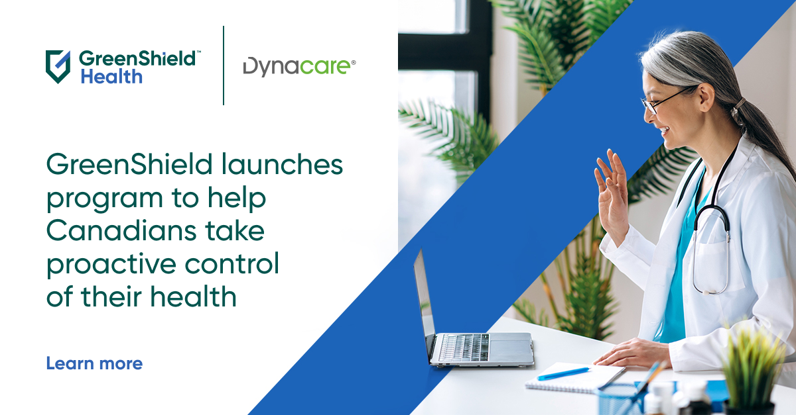

Canadians are spending 2.5 times more time navigating their health and benefits than with their doctor
Read more
Enterprise Health Insurance Plan members Plan sponsors
GreenShield supports Dalhousie Centre for Psychological Health to deliver mental health and addictions services
- Cares
- 
GreenShield helps Canadians proactively take control of their health with new Preventive Healthcare Program
- Health
How healthy parent-child attachment relationships improve well-being
- Cares
- Plan members
- Plan sponsors
Strong Minds Strong Kids, Psychology Canada, joins forces with GreenShield to improve parents mental health
- Cares
- Plan members
- Plan sponsors
GreenShield helps expand access to free mental health services in Ontario
- Health
- Plan members
- Plan sponsors
What is internet-based Cognitive Behavioural Therapy (iCBT) and how can it help you?
- Cares
- Plan members
- Plan sponsors
GreenShield partners with mental health advocate Michael Landsberg to destigmatize mental health
- Health
- Plan sponsors
GreenShield grants $750,000 to Universit Laval's Faculty of Dentistry to improve access to oral health care
- Cares
- Plan sponsors
Webinar: Building Better 2SLGBTQ+ Allyship and Workplace Support
Webinar: How To Manage Stress
Webinar: Talking to Children and Teens About Healthy Relationships
Webinar: Insights into the Mental Health Spectrum
Webinar: Managing Conflict Resolution in the Workplace
Webinar: How To Incorporate Physical Health for Busy Lifestyles
Webinar: How To Identify and Prevent Caregiver Stress and Burnout
Webinar: Fostering Psychological Safety Towards an Inclusive Workplace
Webinar: Self-Care Strategies for Better Mood, Sleep and Nutrition
Mental health and teens: The moms are not alright
- Cares
- Plan members
- Plan sponsors